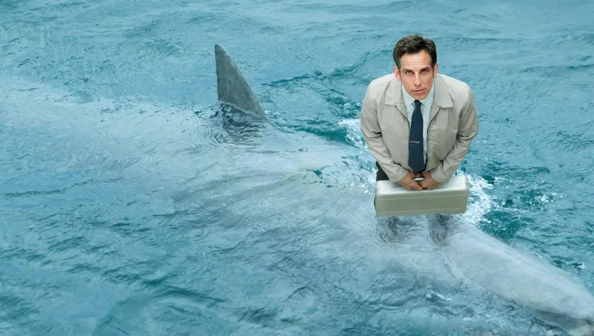
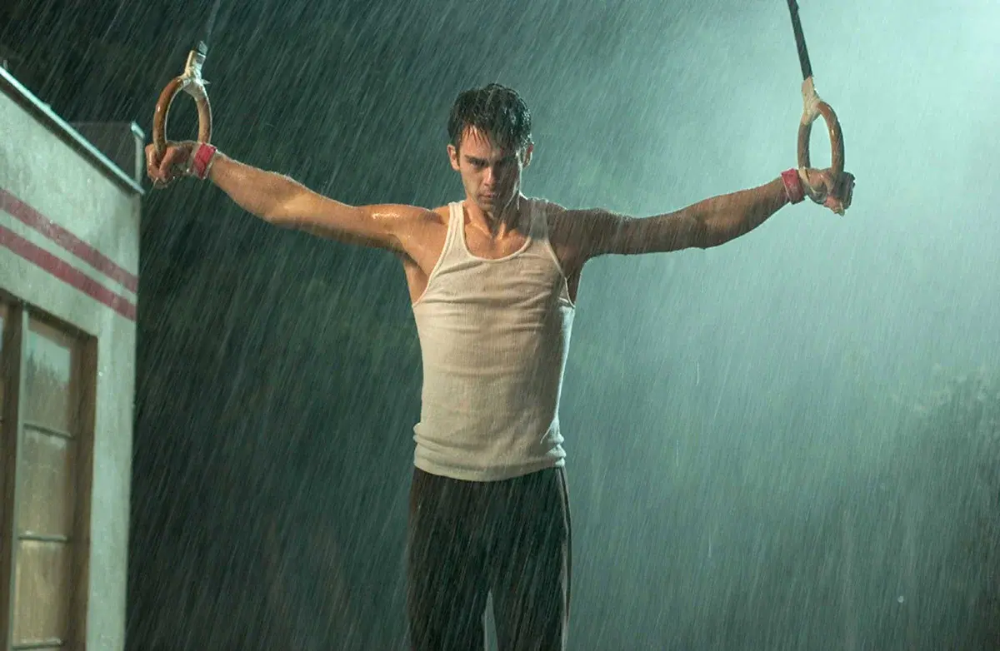
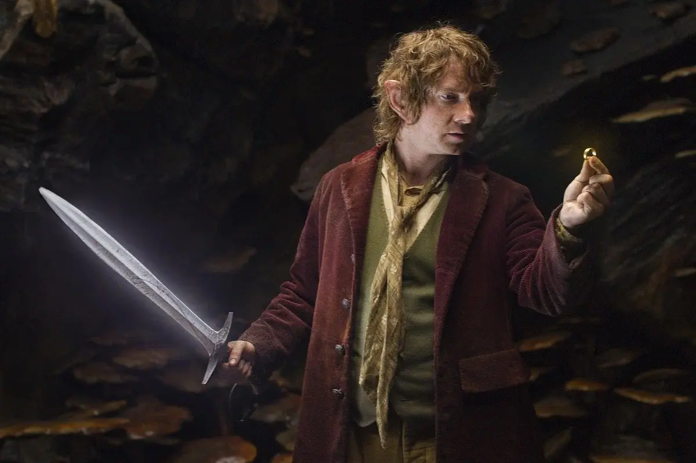
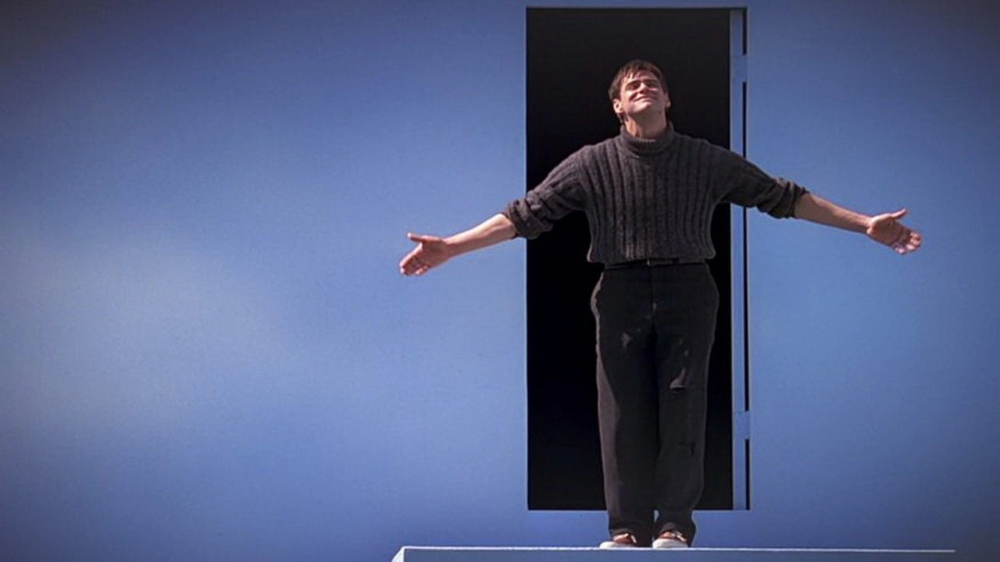
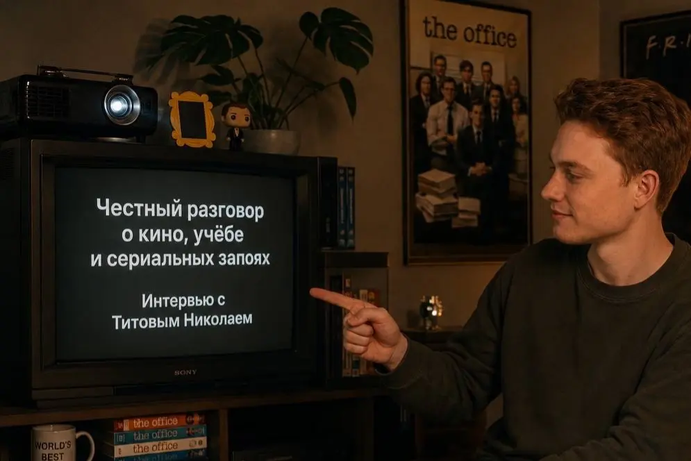

Кинотерапия
5 фильмов про невероятную жизнь
Истории обычных людей, которые решились выйти из зоны комфорта и круто изменили свою судьбу.

Истории обычных людей, которые решились выйти из зоны комфорта и круто изменили свою судьбу.

Глубокие и вдохновляющие картины, помогающие переосмыслить ценности и найти истинный жизненный путь.

Кинематографичные шедевры, которые увлекут интересным сюжетом и расскажут об истории и науке лучше учебников.
Кинокартины об эффекте бабочки и роковых решениях, способных мгновенно развернуть сюжет нашей жизни на 180 градусов.
Разбираем на примере культовых киногероев, как превратить свои громкие ошибки в сценарий для главного триумфа.

Истории о персонажах, которые обнаружили, что их реальность — искусно срежиссированная декорация.
Стиль Фионы — это не просто одежда, а зеркало её борьбы, надежд и сокрушительных разочарований на окраинах Чикаго.
Каждая деталь его костюма призвана транслировать абсолютный успех и скрывать запредельную внутреннюю пустоту

Как копеечные джинсы, кожаные перчатки и легендарный атласный бомбер со скорпионом стали главным языком общения для самого молчаливого героя нео-нуара. Разбор культового стиля Драйвера.
Разговор о поиске баланса между учебой и творчеством, влиянии кино на жизнь и планах на будущее.

Откровенный диалог о личном опыте, скрытых смыслах любимых фильмов и о том, чему нас учит кинематограф.